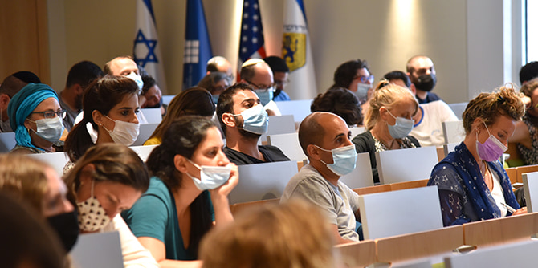
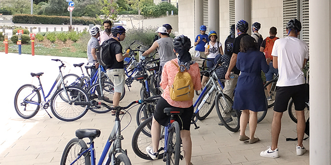

The Mandel Leadership Institute’s joint study days offer fellows of all the Institute’s programs an important opportunity to meet, talk, and get to know one another, and are designed to expose fellows to the full range of content and spheres of influence in which the Institute is active.
The joint study days create an innovative and challenging environment for leadership development, which facilitates engagement with important ideas and encourages the creation of enriching connections. The Institute’s leadership programs contain fellows from a diverse mix of communities and sectors in Israeli society, including leaders from the Haredi community, leaders of non-formal education, leaders in the field of Jewish culture in Israel, and IDF commanders.
The Institute’s second joint study day of the 2020-2021 academic year, conducted on April 19, 2021, focused on issues related to public space in Jerusalem and explored the function of leadership along seam lines and in border areas. Border areas can be geographical, political, or symbolic, and are a product of social processes and relations that can include partnerships or struggles between different groups. A border marks the meeting point between these groups, and is a sensitive arena in which any slight shift can alter the status quo or lead to tension and struggle.
Jerusalem is a city of seam lines – social, ideological, historical, political, and demographic – and as such is a microcosm of Israeli society, comprising a diverse mix of groups and individuals. These border areas bring different historical narratives, beliefs, values, and interest groups into contact with each other, creating encounters between them. Whether they are forced or voluntary, these encounters bring to the surface various human and ethical issues that demand acts of leadership.
The Institute’s joint study day was designed to allow fellows to explore together the issue of border areas and its relevance to the question of leadership in Israeli society. The fellows set out on study tours, visiting different places in Jerusalem in order to investigate case studies of seam lines in the city in which there are tensions or conflicts, and through which it is possible to examine questions of leadership and how leadership operates in these unique spaces.

The guided tours were conducted in groups made up of fellows from the different programs of the Institute. Following each tour, discussions were held in which fellows spoke about the issues that currently concern them as leaders and about principles of leadership that consider the complex contexts in which the acts of leadership take place.
The following key issues were chosen as case studies:
Between Orthodoxies – The Temple Mount is one of the most sensitive locations in the world in terms of religious friction and attempts to challenge its borders. It is the holiest site in Judaism, the third holiest site in Islam, and a site of great importance to Christian tradition and belief. This tour explored the dynamic process by which political, religious, and social boundaries are formed and tested on and around the Temple Mount.
Musrara through an artistic lens – Musrara is a seam line neighborhood in many senses: It lies on the border between East and West Jerusalem, it was home to the Black Panther protest movement against ethnic discrimination and inequality in Israel, and it is adjacent to the Haredi (ultra-Orthodox) neighborhood of Mea Shearim. This tour offered an artistic perspective on the political and social borders of Musrara through photography and music.
Seam lines along King David Street – King David Street is home to a variety of physical and social borders. These include a sore spot in Mamilla, where disadvantaged populations who had lived on the frontline of the historical ceasefire line with Jordan were forcibly evacuated from their homes in order to transform the neighborhood into an upmarket outdoor mall; Machane Yisrael, a Moroccan neighborhood which played a vital role in the development of modern Jerusalem beyond the Old City walls, but which was left out of Israel’s collective memory and its plans for historical preservation; Hebrew Union College, which brings together different denominations of Judaism and embodies the difficulty faced by the Reform movement, the central denomination in American Judaism, in coexisting with Israeli Orthodoxy, as seen from the building’s architecture and location; and the initiative to create encounters between different ethnic and religious worlds at the YMCA.
Nature and the city – In recent years there have been vocal calls for reintroducing nature into the city and providing more opportunities for crossover from the urban grind to a more pastoral, natural atmosphere. Making nature more accessible creates urban nature spots that attract diverse populations who come to enjoy these spaces alongside one another. For animals, urban nature spots offer an oasis of food and living space within the paved and built-up area of the city.
Along the tracks: A railway tour of Jerusalem’s complexities – People in Jerusalem are all on a spectrum between the holy and the everyday, between ancient and new, spiritual and political, personal and national, religious and secular, Jewish and Arab, East and West. These spectrums are crisscrossed by the city’s light rail system, which connects the southwestern and northeastern edges of the city. On the one hand, the trolley system has united Jerusalem; on the other hand, while traveling on the light rail, these connections sometimes appear to be loose to the point of being nonexistent. The points of contact between different worlds that are interwoven along the light rail’s route provide a fascinating look at the city’s complexities.

The study day closed with a lecture from halakhic scholar Malka Puterkovsky, a visiting faculty member at the Institute, who discussed the tensions and social seams in the story of the Jerusalem synagogue featured in the movie The Women’s Balcony (2016). Malka’s presentation served as a springboard for a discussion about what unites groups with different worldviews.
The fellows found the encounters with participants from the other programs of the Institute to be extremely important. The tours and discussions enabled them to talk about issues of leadership in areas of conflict from very different perspectives, allowing them to expand their perspectives and, as they described it, to “illuminate their blind spots.” Moreover, the discussions gave rise to new connections and possibilities for creating partnerships that will help fellows deal with similar challenges in different areas of activity.
{kind=link}
{kind=link}